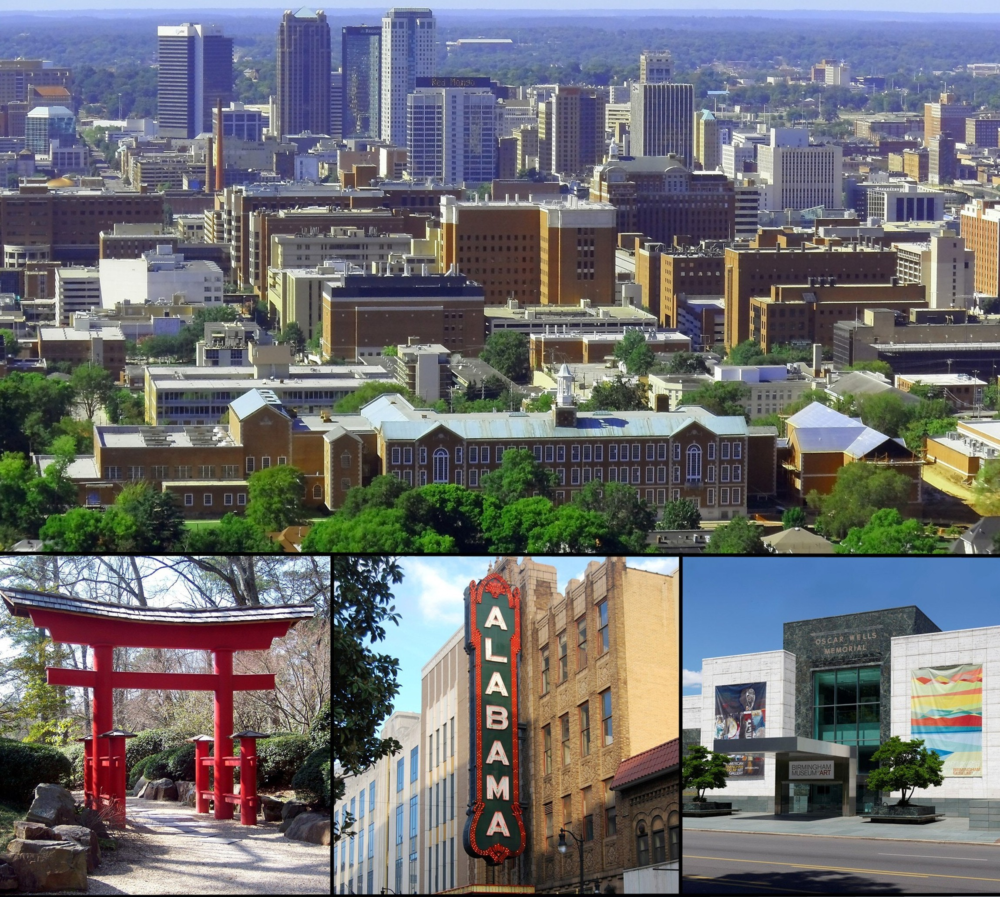
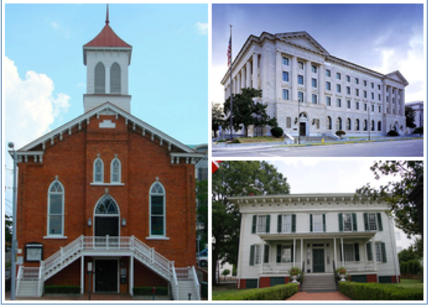

 Birmingham is the largest city in the U.S. state of Alabama. The city is the county seat of Jefferson County. The city's population was 212,237 according to the 2010 United States Census. The Birmingham-Hoover Metropolitan Statistical Area had a population of about 1,128,047 according to the 2010 Census, which is approximately one quarter of Alabama's population.
Birmingham was founded in 1871, during the post-Civil War Reconstruction period, through the merger of three pre-existing farm towns, notably, former Elyton. It grew from there, annexing many more of its smaller neighbours, into an industrial and railroad transportation center with a focus on mining, the iron and steel industry, and railroading. Birmingham was named for Birmingham, England, UK; one of that nation's major industrial cities. Most of the original settlers who founded Birmingham were of English ancestry.
 Montgomery is the capital of the U.S. state of Alabama and is the county seat of Montgomery County. Named for Richard Montgomery, it is located on the Alabama River, in the Gulf Coastal Plain. As of the 2010 Census, Montgomery had a population of 205,764. It is the second-largest city in Alabama, after Birmingham, and the 103rd largest in the United States. The Montgomery Metropolitan Statistical Area had a 2010 estimated population of 374,536. It is the fourth-largest in the state and 136th among United States metropolitan areas.
The city was incorporated in 1819, as a merger of two towns situated along the Alabama River. It became the state capital in 1846, representing the shift of power to the south-central area with the growth of cotton as a commodity crop of the Black Belt and Mobile's rise as a mercantile port. In February 1861, Montgomery was selected as the first capital of the Confederate States of America, until the seat of government moved to Richmond, Virginia, in May of that year.